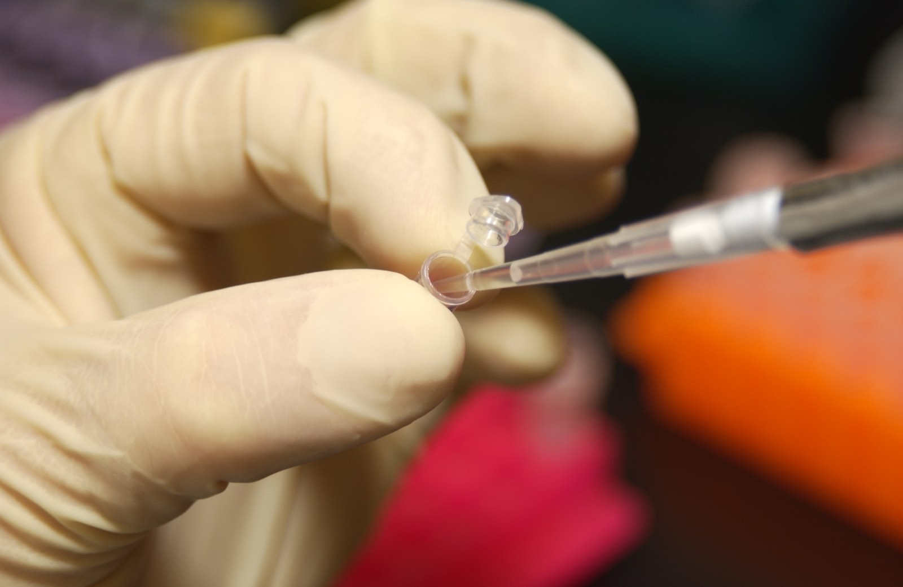
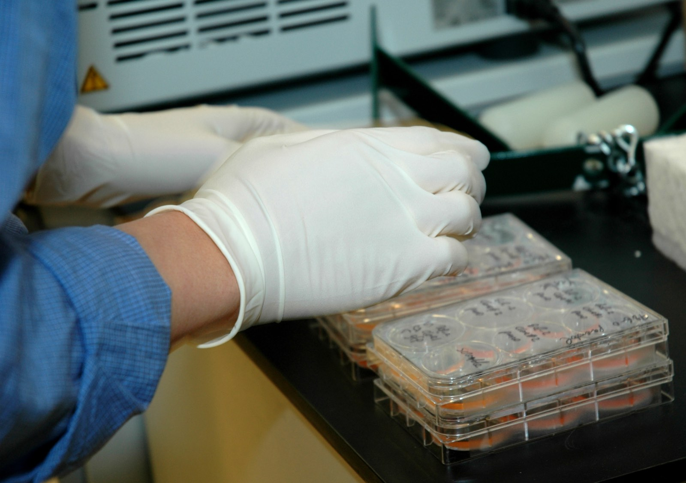

Science Communication Education
The SAFE Research Institute provides educational resources to promote scientific literacy and public understanding of science and technology topics.

How to Become a Science Communicator
Effective science communication is a skill built through deliberate practice and cross-disciplinary engagement.
| Step | What to do |
|---|---|
| 1. Build Your Foundation | Invest in formal education in your scientific discipline and stay current with the literature. |
| 2. Develop Communication Skills | Practice distilling complex concepts into clear, accurate language. |
| 3. Find Your Platform | Identify the medium that best suits your strengths and your target audience. |
| 4. Build Credibility | Publish consistently, cite your sources transparently, and acknowledge the limits of available data. |
| 5. Connect with Organizations | Partner with research institutes, professional associations, and public health organizations. |
| 6. Stay Current & Evolve | Science communication is an evolving discipline. |
Working with Policymakers
Presenting research to policymakers requires a different approach than writing for academic journals.
| Practice | What it means |
|---|---|
| Lead with the Problem, Not the Data | Open with the policy question or public health topic. |
| Use Plain Language, Not Jargon | Replace technical terminology with clear, everyday language. |
| Provide One-Page Research Briefs | Condense your findings into a single-page summary with key takeaways, supporting data points, and the state of the evidence. |
| Offer to Be a Resource, Not a Partisan | Position yourself as an independent expert available to answer questions. |
| Understand the Public Process | Understand how committees and public bodies review information, so you can present evidence clearly and at a time when it is most useful for informed decision-making. |
| Follow Up Consistently | Respond promptly to questions, provide updated data when it becomes available, and maintain professionalism at every stage. |

Communicating Research to the Public
Translating complex science into accessible content is one of the most important responsibilities of a science communicator.
| Principle | What it means |
|---|---|
| Know Your Audience | Research who you are speaking to before crafting your message. |
| Use Analogies and Stories | Narrative is one of the most powerful tools for making data memorable. |
| Address Misconceptions Directly | Do not shy away from common myths or misunderstandings. |
| Cite Your Sources Transparently | Always reference the peer-reviewed studies, datasets, or institutional reports that underpin your claims. |
| Use Multiple Media Formats | Different audiences consume information in different ways. |
Resources
| Source | What it offers |
|---|---|
| Evidence Library | Everything the Institute has published, free to read and download as a PDF. |
| National Academies of Sciences | Reports, proceedings, and resources from the National Academies on communicating science effectively to policymakers and the public. |
| AAAS Communication Resources | The American Association for the Advancement of Science offers training programs, toolkits, and guides for scientists engaging with public audiences and media. |
| Science & Policy Engagement Guides | Practical guides on how scientists can engage in the policy process, from writing effective testimony to building relationships with elected officials. |